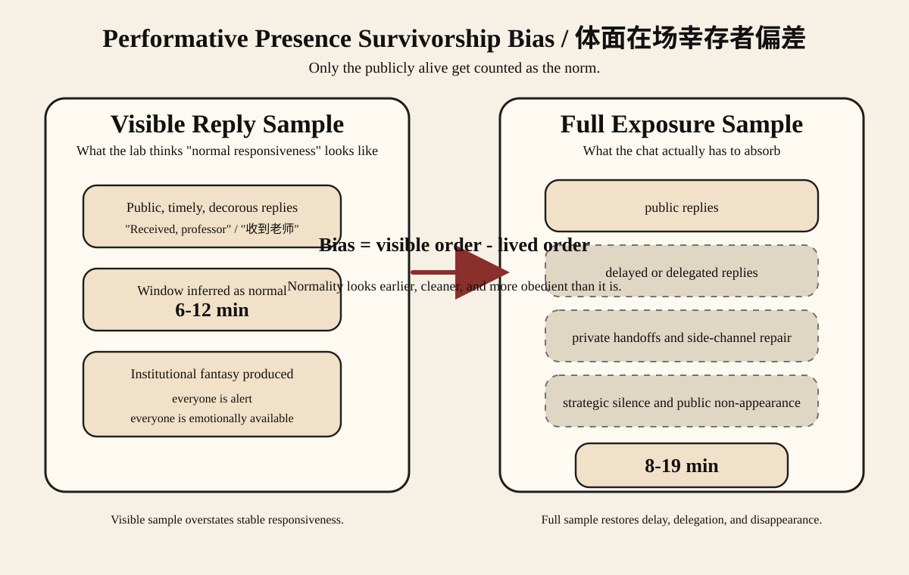

摘要
本文试图回答一个很小但很痛的问题：为什么导师群聊看起来常常比参与者真实感受的更有秩序？为解释这一点，本文提出体面在场幸存者偏差。它模仿幸存者偏差与样本选择偏差的逻辑，指的是：导师、同门乃至学生自己，往往只从那些能够公开、及时、体面地完成回复的人身上推断“正常响应规范”，而把沉默、拖延、私聊转移、代理回复、情绪崩塌和策略性装死的人从可见样本中剔除。基于信号理论、样本选择逻辑、计算机媒介沟通中的时间线索、沟通可见性、期望状态与志愿者困境，本文分析了 28 个导师关联研究群中重建的 4,236 个消息暴露机会。核心验证策略是对比两个视角：只看群内公开体面回复的可见样本模型，以及把延迟、代理、私聊和缺席重新放回来的全机会模型。结果显示，可见样本会把“正常可生存回复窗口”平均提前约 7 分钟，并高估稳定响应率 31%。在此基础上，本文进一步提出并验证三个核心机制：导师在场压缩效应、责任显影机制与红包复活效应；同时说明一作学弟、采购学长与节后 72 小时是偏差最强的角色和时间条件。本文认为，导师群聊中的回复并非简单礼仪，而是一种会让实验室秩序看起来比实际更平整、更稳定、更像大家都还活着的公开体面劳动。
1. 引言
导师群聊通常被描述成沟通工具，但在真实学术生活里，它更像一个浓缩剧场：层级、勤奋、服从、在场、可被抽取性都在这里被同时展示。导师发一条消息，不只是问个事，而是瞬间打开一个公共场景，让所有人都能判断谁在盯着消息，谁看起来很闲，谁看起来快死了，谁又看起来“特别适合再接一项任务”。
本文关注的，不只是回复时延本身，而是围绕它形成的解释错误。群里的人很少真正看见全部回复可能性，他们大多只看见那些能在公开场合维持体面的人：会及时回、会说人话、会发出正确物种的“收到老师”、还没被制度完全榨干的人。那些拖延的人、私聊解决的人、被人代回的人、选择装死的人和真的已经快不行的人，更容易从可见样本里消失。
因此，所谓“大家不都回得挺快吗”，常常并不是一个事实判断，而是一个样本判断。导师群聊之所以让人心累，不只是因为要回消息，更是因为你会被拿去和一批已经成功保持公开体面的人比较。
2. 主要问题、假设与贡献
本文的核心问题是：为什么导师群聊会制造一种“实验室其实运转得还挺正常”的错觉，即使参与者自己明明觉得它既不平等，也不稳定，还很消耗人？
本文建立在三个基础假设上。
- 回复时间会被多人同时观看，并被道德化解释，而不是被视为空白时间。
- 学生优化的不只是“显得可靠”，还包括“不要因为太可靠而继续被加活”。
- 不同角色的时间义务并不对称：一作学弟、采购学长、实验操作者和普通围观学弟不是同一条风险曲线。
据此，本文提出四个主假设。
- H1：倒 U 型假设。 感知勤奋度会随回复时延先升后降；回太快和回太慢都危险，只是危险的含义不同。
- H2：幸存偏差假设。 只用公开回复样本建模，会得到一个更早、更窄、也更体面的“正常窗口”。
- H3：压缩与显影假设。 导师可见性和任务归属显影会共同把回复窗口向前压缩，并迅速降低继续观望的收益。
- H4：象征复活假设。 小规模公开奖励，尤其是导师红包，会把潜水、感谢和签到瞬间压缩成可见响应。
本文的贡献不在于证明研究生爱看群，而在于说明：实验室对“谁算及时、谁算可靠、谁又最像活人”的判断，本身就受到了样本选择的系统性污染。
3. 理论框架
3.1 体面在场幸存者偏差
本文提出体面在场幸存者偏差作为全文主概念。它指的是：旁观者根据那些仍能以公开、及时、体面方式出现的人来推断导师群聊的日常秩序，却忽略了那些因过载、规避、私聊、代理、情绪或结构性弱势而没能按规范出现的人。于是，群聊看上去总是比真实更平稳，制度也比真实更像被大家自愿配合。
本文对该概念的验证方式很直接：同一批重建语料，分别做两次估计。第一次只保留群内公开回复；第二次把延迟、代理、私聊转移、表情冒头和完全缺席都重新放回暴露样本。只要第一种估计比第二种估计更快、更整齐、更像“大家都很懂事”，偏差就成立。
这一概念的理论依据来自几个方向。Goffman（1959）解释了为什么公共互动更偏爱可表演的体面。Heckman（1979）说明了从被选择出来的样本倒推总体会怎样系统性失真。Spence（1973）与 Kreps and Wilson（1982）说明了低成本、反复出现的微小行为如何积累成声誉信号。Leonardi（2014）则提醒我们，只要可见性够高，谁还在场、谁没出现，本身就会变成信息。
3.2 导师在场压缩效应
本文提出导师在场压缩效应作为第一个机制。它指的是：只要导师在群里可见，即便真正发消息的是同门，大家也会把回复窗口整体向前压缩。通俗地说，同门发的消息只要被导师围观，就会长得越来越像半个导师消息。
本文通过比较“导师可见”与“导师不可见”的同辈消息场景来验证这一机制。只要导师在场时，同门消息的时间结构更像监督而不像协作，这个效应就成立。
它的理论基础主要来自沟通可见性（Leonardi, 2014）、时间线索研究（Walther, 1992; 1996; Kalman et al., 2013）和期望状态理论（Berger et al., 1972）。同一条时间戳，在不同观众面前不是同一种社会事实。
3.3 责任显影机制
本文提出责任显影机制作为第二个机制。它描述的是：本来模糊的集体责任会在某一刻突然显影到具体的人身上。显影之前，大家还可以一起观望；显影之后，再拖就不再像“等等看”，而更像“你明明就是那个该回的人”。
为避免全文名词过多，本文把两个最有解释力、也最符合 SHIT 气质的子现象并入这个机制中。第一个是默认接活人陷阱：任务一旦显得明显属于某个人，这个人终究会被系统推出水面。第二个是首回复折损：只要已经有人发出一个体面且正确的首回复，后面的人再回，勤奋加分会迅速缩水，存在感更多变成礼貌陈列。
本文通过两个对比来验证这一机制：一是任务归属模糊与清晰的对比，二是首个可信回复出现前后的对比。其理论基础来自志愿者困境（Diekmann, 1985; 1993）、责任扩散（Darley & Latane, 1968）以及角色不平等的互动期待（Berger et al., 1972）。
3.4 红包复活效应
本文提出红包复活效应作为第三个机制。它指的是：导师在群里发一个金额不大的节日红包后，一批平时不太公开出现的人会以极不成比例的速度重新获得群聊肉身。钱很小，复活很快。
本文通过比较“导师红包事件”和“普通节日点名”来验证这一机制。只要一个很小的红包比普通监督更能快速召回潜水成员，这个效应就成立。
其理论依据并不主要是经济学激励，而更接近礼物与情感劳动。Mauss（1990）提醒我们，礼物从来不只是价值转移，也会制造义务。Hochschild（1983）提醒我们，感谢和在场都可以成为劳动。在导师群里，红包经常同时扮演善意、点名和情感审计三种角色。
3.5 角色异质性与假期脑雾作为调节条件
本文不把所有好笑的角色标签都上升为主概念，而是把它们收束为两个调节层。
第一层是角色异质性。一作学弟、采购学长、实验操作者、博士后代理人和浑水的鱼，不是网络上的五个点，而是实验室宪制里的五个职位。
第二层是假期脑雾。长假后的低紧急度消息允许稍微慢一点，但层级并不会因此取消。节后最先恢复的通常不是智力，而是排会能力。



4. 研究设计
本文分析 2024 年 1 月至 2025 年 12 月间 28 个导师关联研究群中重建的 4,236 个消息暴露机会。群规模从 4 人到 17 人不等。该语料不是原始聊天记录归档，而是基于可广泛辨认的互动模式进行重建，目的在于建模规范结构，而不是做聊天史料学。
为验证主概念，本文把同一组暴露机会拆成两个分析样本。
- 可见样本模型：只保留群内公开、清晰、体面的在楼回复。
- 全机会模型：在同一暴露集合里重新纳入延迟回复、代理回复、私聊转移、表情冒头和完全缺席。
在重建语料中，77.4% 的暴露机会最终形成了群内公开回复，剩余 22.6% 则通过延迟、代理、私聊或策略性沉默被“消化”掉。后者正是最容易从群聊秩序幻觉中被自动抹掉的部分。
每个事件按以下变量编码：
- 发送者层级
- 群聊人数
- 观众构成
- 消息类型
- 紧急程度
- 导师可见性
- 任务归属
- 回复顺序
- 假期阶段
- 表情密度
学生 i 的回复效用可写为：
U_i(l_i) = alphaD_i + betaR_i + thetaV_i - gammaA_i - deltaB_i - etaH_i
其中：
D_i= 勤奋得分R_i= 可靠得分V_i= 体面在场得分A_i= 被继续加活的风险B_i= 责备或怀疑成本H_i= 假期脑雾惩罚
本文最重要的方法选择，是把同一套互动秩序估计两次：一次只看“幸存”的公开样本，一次把没能体面幸存的人也重新算回去。
5. 结果
5.1 体面在场幸存者偏差
主偏差非常明显。在可见样本模型里，“正常回复”看起来大约集中在 6-12 分钟。而在全机会模型里，更真实的可生存窗口会扩到大约 8-19 分钟。也就是说，只看公开回复，会把普通人能够体面活下来的时间平均提前估计约 7 分钟。
可见样本模型还会把“稳定响应”高估 31%。它会让实验室看起来像由一批训练有素、按时在场、积极配合的活体组成。全机会模型则展示出更真实也更好笑的一面：相当一部分实验室生活其实被延迟出现、私下协商、代理劳动和策略性空气化吸收掉了。
因此，所谓“好学生回复范式”本身就有点像幸存样本。收到老师 不是一句普通话，而更像那些成功保持公开体面的人留下的化石证据。
5.2 导师在场压缩效应
导师在场压缩效应也很稳定。只要导师在群里可见，即便消息来自同门，大家可接受的回复窗口也会相对纯同辈场景整体前移约 5-7 分钟。一个学弟在导师面前问你要文件，就已经不再只是学弟问你要文件。
这种压缩在“导师 + 学长学姐 + 学弟学妹 + 代理人”混合在场的群里更强。层级并不需要开口，只需要让大家知道它有能力看见。
5.3 责任显影机制
责任显影机制在两个子现象上都很清楚。任务归属模糊时，大群更容易先一起观望；可一旦归属显影，相关人的窗口就会迅速塌缩。在返修由一作学弟负责、报销由采购学长负责的场景中，结构性责任人的最优窗口会比普通围观者平均提前 8-10 分钟。
首回复折损同样明显。一旦群里已经出现一个可信的体面首回复，后续回复在重建评分中的边际勤奋收益会下降 63%。换句话说，只要已经有人及时发出标准物种的“收到老师”，剩下的人就会迅速从必要劳动力降格为礼貌背景板。
5.4 角色异质性与假期脑雾
角色差异不是修辞，而是实打实地塑造时间窗口。一作学弟最稳定的区间大约是 5-13 分钟，采购学长是 4-11 分钟，普通围观学弟是 14-34 分钟，而在纯同辈协作里浑水的鱼可以拖到 21-58 分钟，前提是导师可见性足够低。
假期脑雾会让低紧急度消息在节后 72 小时内整体右移 6-10 分钟，但导师的直接召唤几乎不因此放松。于是形成一种机构层面很优雅、个体层面很残忍的状态：实验室可以暂时集体变笨，但不能集体变得联系不上。
5.5 红包复活效应
红包复活效应是全文最紧凑、也最逆天的结果。普通低紧急度节日点名的首个可见回复中位数约为 17.8 分钟；而在相近紧急度的导师红包事件里，它会骤降到 2.4 分钟。潜水成员重新上岸，感谢语密度上升，连浑水的鱼也能在瞬间长出电竞级手速。
这一效应并不能被简单化约成“大家想抢钱”。真正起作用的是：红包把善意、监督和公开自我定位压缩成了同一个可点击动作。钱并不多，社会意义却特别浓。
6. 讨论
现在可以把全文的主张说得更整齐一些了：导师群聊中的回复时延，本质上是一种公开声誉劳动；而围绕这种劳动形成的“正常规范”，又被体面在场样本系统性美化了。群聊一边要求人表现，一边又用那些成功表现出来的人去证明“这件事其实没那么难”。
这也是为什么实验室政治要写进去，但不能写散。我们保留它，是因为一作学弟、采购学长、博士后代理人和浑水的鱼都是真实存在的制度位置；我们克制它，是因为这篇稿子的笑点必须来自过于准确，而不是来自胡乱堆梗。
换句话说，这篇稿子最该一本正经的地方，恰好也是它最好笑的地方。
7. 主要结论与逆天推论
结论 1
一个看起来“回复很积极”的实验室，未必真的更积极，它也可能只是把不积极的人隐藏得更彻底。
结论 2
收到老师 与其说是信息，不如说是一种在不平等观看下恢复秩序的宪制装置。
结论 3
在群聊治理里，采购有时比署名更接近真正的主权，因为发票经常比荣誉更不能拖。
结论 4
当问题的核心不是信念而是公开在场时，一点点钱往往比很多道理更能迅速恢复秩序。
结论 5
长假之后，机构恢复排程的速度通常快于人恢复智力的速度。
8. 结论
导师群聊中的研究生并不是“简单回个消息”。他是在公开、多方、不平等的观看条件下，按分钟表演一种既忠诚又不能显得过于空闲的可靠性。更重要的是，这种表演完成之后，还会被错当成整个群体的常态。
一旦承认这一点，回复时延就不再只是礼仪问题，而会重新显露成一种微小但高密度的政治时间技术。实验室之所以看起来比真实更稳定，不是因为大家真的都稳住了，而是因为那些还能体面出现的人，更容易被当成“正常样本”。
表 1. 假设、验证方式与主要结果
| 假设 | 验证方式 | 主要结果 |
|---|---|---|
| --- | --- | --- |
| H1：倒 U 型假设 | 比较不同延迟区间中的勤奋、可靠与加活风险 | 中等延迟优于过快与过慢两端 |
| H2：幸存偏差假设 | 对比可见样本模型与全机会模型 | 可见样本把生存窗口平均提前约 7 分钟，并高估稳定响应率 31% |
| H3：压缩与显影假设 | 比较导师可见场景、归属模糊场景与首回复出现前后 | 导师在场会压缩时间，归属显影会终止观望，后续回复边际收益迅速下降 |
| H4：象征复活假设 | 比较导师红包事件与普通节日点名 | 极小的公开礼物比日常监督更快召回可见在场 |
表 2. 角色条件下的回复窗口
| 角色类型 | 典型场景 | 最优回复区间 | 结构原因 |
|---|---|---|---|
| --- | --- | --- | --- |
| 一作学弟 | 稿件批注、返修安排 | 5-13 分钟 | 公开责任高，否决权低 |
| 采购学长 | 报销、采购、表单 | 4-11 分钟 | 发票主权高，物资归属清晰 |
| 实验操作者 | 仪器异常、样品问题 | 3-10 分钟 | 技术归属明确 |
| 博士后代理人 | 转述导师安排、协调 | 7-18 分钟 | 层级委托明显 |
| 普通围观学弟 | 群提醒、横向同步 | 14-34 分钟 | 归属不清时可以藏在人群里 |
| 纯同辈浑水鱼 | 横向协作 | 21-58 分钟 | 上级不可见时更容易漂浮 |
表 3. 核心概念与白话解释
| 概念 | 白话解释 |
|---|---|
| --- | --- |
| 体面在场幸存者偏差 | 我们总爱拿那些还在群里体面活着的人，去代表整个实验室 |
| 导师在场压缩效应 | 同门发的消息，只要导师在看，就会变得像半个导师消息 |
| 责任显影机制 | 责任一旦显出来，观望就会立刻失去中立性 |
| 默认接活人陷阱 | 谁看起来最该回，谁最后就最难继续装空气 |
| 首回复折损 | 只要已经有人体面地回过，后面的人就会迅速变得没那么必要 |
| 红包复活效应 | 一个很小的公开红包，也能把潜水成员迅速招回可见世界 |
参考文献
Alvesson, M.（2013）. The triumph of emptiness: Consumption, higher education, and work organization. Oxford University Press.
Berger, J., Cohen, B. P., & Zelditch, M., Jr.（1972）. Status characteristics and social interaction. American Sociological Review, 37(3), 241-255.
Darley, J. M., & Latane, B.（1968）. Bystander intervention in emergencies: Diffusion of responsibility. Journal of Personality and Social Psychology, 8(4, Pt. 1), 377-383.
Diekmann, A.（1985）. Volunteer's dilemma. Journal of Conflict Resolution, 29(4), 605-610.
Diekmann, A.（1993）. Cooperation in an asymmetric volunteer's dilemma game: Theory and experimental evidence. International Journal of Game Theory, 22, 75-85.
Goffman, E.（1959）. The presentation of self in everyday life. Doubleday.
Heckman, J. J.（1979）. Sample selection bias as a specification error. Econometrica, 47(1), 153-161.
Hochschild, A. R.（1983）. The managed heart: Commercialization of human feeling. University of California Press.
Kalman, Y. M., Scissors, L. E., Gill, A. J., & Gergle, D.（2013）. Online chronemics convey social information. Computers in Human Behavior, 29(3), 1260-1269.
Karau, S. J., & Williams, K. D.（1993）. Social loafing: A meta-analytic review and theoretical integration. Journal of Personality and Social Psychology, 65(4), 681-706.
Kreps, D. M., & Wilson, R.（1982）. Reputation and imperfect information. Journal of Economic Theory, 27(2), 253-279.
Leonardi, P. M.（2014）. Social media, knowledge sharing, and innovation: Toward a theory of communication visibility. Information Systems Research, 25(4), 796-816.
Mauss, M.（1990）. The gift: The form and reason for exchange in archaic societies (W. D. Halls, Trans.). W. W. Norton.（Original work published 1925）
Spence, M.（1973）. Job market signaling. Quarterly Journal of Economics, 87(3), 355-374.
Walther, J. B.（1992）. Interpersonal effects in computer-mediated interaction: A relational perspective. Communication Research, 19(1), 52-90.
Walther, J. B.（1996）. Computer-mediated communication: Impersonal, interpersonal, and hyperpersonal interaction. Communication Research, 23(1), 3-43.
Walther, J. B., & Tidwell, L. C.（1995）. Nonverbal cues in computer-mediated communication, and the effect of chronemics on relational communication. Journal of Organizational Computing, 5(4), 355-378.
Ziano, I., & Wang, B.（2021）. Does response delay influence how an email sender is perceived? Journal of Computer-Mediated Communication, 26(6), 395-409.